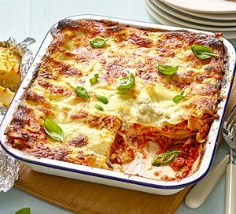

Easy Classic Lasagne

Kids will love to help assemble this easiest ever pasta bake with streaky bacon, beef mince, a crème
fraîche sauce and gooey mozzarella.
Ingridients:
- 1 tbsp olive oil.
- 2 rashers smoked streaky bacon.
- 1 onion , finely chopped.
- 1 celery stick, finely chopped.
- 1 medium carrot , grated.
- 2 garlic cloves , finely chopped.
- 500g beef mince.
- 1 tbsp tomato purée.
- 400g cans chopped tomatoes. x2
- 1 tbsp clear honey.
- 500g pack fresh egg lasagne sheets.
- 400ml crème fraîche.
- 125g ball mozzarella , roughly torn.
- 125g ball mozzarella , roughly torn.
- large handful basil leaves , torn (optional).
Steps:
- Heat the oil in a large saucepan.
- Use kitchen scissors to snip the bacon into small pieces, or use a sharp knife to chop it on a chopping board.
- Add the bacon to the pan and cook for just a few mins until starting to turn golden.
- Add the onion, celery and carrot, and cook over a medium heat for 5 mins, stirring occasionally, until softened.
- Add the garlic and cook for 1 min, then tip in the mince and cook, stirring and breaking it up with a wooden spoon,
for about 6 mins until browned all over.
- Stir in the tomato purée and cook for 1 min, mixing in well with the beef and vegetables.
- Tip in the chopped tomatoes.
- Fill each can half full with water to rinse out any tomatoes left in the can, and add to the pan. Add the honey and season to taste.
- Simmer for 20 mins.
- Heat oven to 200C/180C fan/gas 6.
- To assemble the lasagne, ladle a little of the ragu sauce into the bottom of the roasting tin or casserole dish, spreading the
sauce all over the base.
- Place 2 sheets of lasagne on top of the sauce overlapping to make it fit, then repeat with more sauce and another layer of pasta.
- Repeat with a further 2 layers of sauce and pasta, finishing with a layer of pasta.
- Put the crème fraîche in a bowl and mix with 2 tbsp water to loosen it and make a smooth pourable sauce.
- Pour this over the top of the pasta, then top with the mozzarella.
- Sprinkle Parmesan over the top and bake for 25–30 mins until golden and bubbling.
- Serve scattered with basil, if you like.